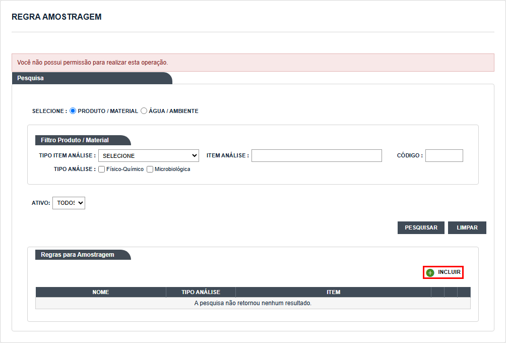
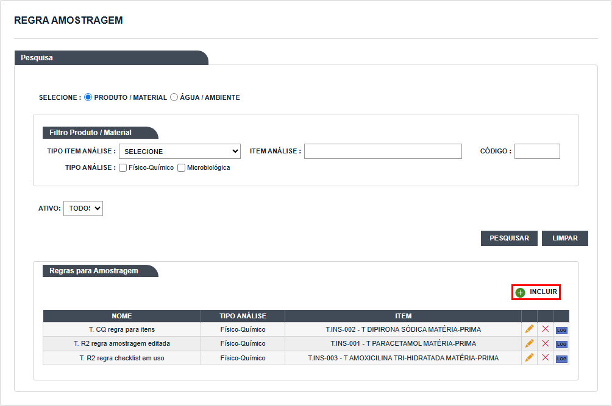

O que acontece ao confirmar ou salvar
- Incluir: grava a regra (API 201), acrescenta "Inclusão" ao histórico com a justificativa automática "Inclusão de regra de amostragem" e volta à pesquisa em branco, sem mensagem.
- Alterar: exige justificativa, grava (API 204) e guarda no histórico o resumo da regra antes e depois. A tela volta à pesquisa em branco, sem mensagem.
- Excluir: exige justificativa e remove a regra da lista (API 204, justificativa enviada ao servidor); a tela mantém o filtro do item, sem mensagem.
- No legado, alterar uma regra já usada em amostragem criava uma regra nova e escondia a antiga; excluir não conferia o uso (DV-CQ-013). Não foi possível testar na versão nova, porque a Consultar Amostragem ainda é tela provisória. Já o contrário vale: um checklist usado por uma regra não pode ser excluído na Verificação de Amostragens ("O registro possui vínculos e não pode ser excluído."; ver o manual daquela tela).
O que o sistema recusa
| Situação | Mensagem exata | Observação |
|---|---|---|
| Incluir sem tipo de item e item | "Selecione Tipo Item Análise e Item Análise antes de incluir." | Faixa rosa |
| Salvar vazio | "Preencha Nome da Regra, Tipo de Cálculo, Quantidade e Tolerância." | Antes o legado dava só "Ocorreu um erro inesperado." |
| Texto ou negativo na quantidade (com ou sem a tolerância errada) | "Qtde. Cálculo: informe um número válido com até cinco casas decimais." | O legado gravava 0,00 e aceitava negativos (DV-CQ-012) |
| Texto ou negativo só na tolerância | "Tolerância (%): informe um número válido com até cinco casas decimais." | A quantidade é conferida primeiro |
| Tolerância acima de 100 | Não é recusada (150 gravou) | DV-CQ-N-015 |
| Regra repetida (mesmo item e tipo de análise) | "Regra já existe para o item e Tipo Análise selecionados." (API 409) | Igual ao legado ("Regra já existe!") |
| Alterar sem justificativa | "Informe a justificativa da alteração." (faixa rosa; a caixa continua aberta) | Visto no print |
| Excluir sem justificativa | "Informe a justificativa para exclusão." (faixa rosa; a caixa continua aberta) | Visto no print |
| Excluir a unidade usada por uma regra | Recusado na tela Unidade de Medida | Ver o manual daquela tela |
Campos da tela
| Campo | Tipo | Tamanho | Obrigatório | Valores e regra | Observação |
|---|---|---|---|---|---|
| SELECIONE (Produto / Material ou Água / Ambiente) | Opção | — | Sim | Troca os filtros | Só Produto / Material testado |
| TIPO ITEM ANÁLISE | Lista | — | Para incluir | Granel, Matéria-Prima, Material Embalagem, Produto Acabado, Semi-Elaborado | |
| ITEM ANÁLISE | Texto com busca | — | Para incluir | Escolher na lista | |
| CÓDIGO | Texto | — | — | Preenche sozinho | |
| TIPO ANÁLISE (filtro) | Caixas | — | Não | Físico-Químico, Microbiológica | |
| ATIVO (filtro) | Lista | — | Não | TODOS, SIM, NÃO | |
| TIPO ANÁLISE (formulário) | Opção única | — | Sim | Físico-Químico ou Microbiológico | |
| NOME DA REGRA | Texto | 100 caracteres (o campo para de aceitar no 100º) | Sim | Igual ao legado | |
| VERIF. AMOSTRAGEM | Lista | — | Produto e material (do legado; a confirmar na versão nova) | Checklists cadastrados, inclusive as cópias "DUPLICADO_CODIGO" (DV-CQ-N-010) | |
| TIPO DE CÁLCULO | Lista | — | Sim | "Por percentual" e "Por valor absoluto" (grava "VA") | Visto nos prints 23 e 24 |
| QTDE. CÁLCULO | Número | até 5 casas decimais | Sim | Não aceita texto nem negativo | |
| TOLERÂNCIA (%) | Número | até 5 casas decimais (mesma regra da quantidade) | Sim | Não aceita texto nem negativo; aceita acima de 100 (DV-CQ-N-015) | Rótulo "(%)" também no valor absoluto |
| UNIDADE | Lista | — | Sim | Unidades cadastradas (vistas: T.CQ03, T.R2U1, T.R2U4, TCX, TKG) | Nunca fica bloqueada (no legado ficava para produto e material) |
| ATIVO (formulário) | Sim ou Não | — | Sim | Abre com Sim | |
| JUSTIFICATIVA | Texto na caixa | — | Alterar e excluir |
Quem pode usar (permissões)
- Contas usadas nos testes: a rodada 1 e a conferência de 17/11/2026 usaram a conta de administrador de teste, que abre e usa todas as funções da tela. Em 18/11/2026 a rodada de perfil restrito acrescentou duas contas de teste, uma sem acesso ao CQ e outra só de consulta (abaixo). Não há quadro de quem pode (
quem-pode.csv) para o CQ novo. - Perfil sem acesso ao CQ (conta T.R2CQ01, perfil T. R2 CQ SEM ACESSO, nenhuma função do CQ; 18/11/2026): O menu não mostra nenhum item do CQ. Pela rota a tela abre inteira com o botão Incluir visível; a lista vem vazia com a faixa "Você não possui permissão para realizar esta operação." e, abaixo, "A pesquisa não retornou nenhum resultado." (DV-CQ-N-030). A API recusa tudo com 403 ("Acesso negado ao módulo."): lista, tipos de item, POST, PUT, DELETE e histórico; sem rota de relatório (404).
- Perfil de consulta (conta T.R2CQ02, perfil T. R2 CQ CONSULTA: tela marcada com CONSULTAR LOG e IMPRIMIR / EXCEL, sem INCLUIR, ALTERAR e EXCLUIR; 18/11/2026): O menu do CQ mostra a tela. Ela abre e lista (3 linhas), com Incluir, Editar, Excluir e histórico ativos (DV-CQ-N-032). Pela API: leitura 200 e histórico 200; POST, PUT e DELETE recusados com 403; sem rota de relatório (404). A gravação pelo formulário não foi tentada nesta tela.
- Sem login ou com token inválido, a API recusa (401).
- No legado, quem só consultava incluía regra (DV-CQ-031, Alta). (do legado) Na versão nova, testado em 18/11/2026: o servidor recusa a gravação sem a função (403), melhoria sobre o legado; a interface, porém, continua mostrando os botões e a recusa tem texto variado (DV-CQ-N-031, DV-CQ-N-032).

A imagem mostra a tela com a conta sem acesso: faixa de recusa, o botão Incluir visível (marcado) e a lista vazia com "A pesquisa não retornou nenhum resultado.".

A imagem mostra a lista com 3 linhas, os ícones de editar, excluir e histórico ativos e o botão Incluir (marcado).